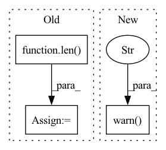

Pattern ID :18912
Before Change
Args:
window: (window_length,)
window_length = len( window)
if hop_size is None:
hop_size = window_length // 2
windows = torch.cat([
torch.roll(window.unsqueeze(dim=0), hop_size*idx) for idx in range(window_length // hop_size)
], dim=0)
power = windows**2
norm = power.sum(dim=0)
optimal_window = window / norm
After Change
Args:
window: (window_length,)
warnings.warn("Use utils.audio.build_optimal_window instead." , DeprecationWarning)
return backend.build_optimal_window(window, hop_size=hop_size)
In pattern: SUPERPATTERN
Frequency: 3
Non-data size: 3
Instances Fragment ID: 61426552
Project Name: tky823/dnn-based_source_separation
Commit Name: 89827284c1571f501dafd27322b4efd2ff492493
Time: 2021-11-17
Author: delta9guitar97@gmail.com
File Name: src/utils/utils_audio.py
M Class Name: AnonimousClass
N Class Name: AnonimousClass
M Method Name: build_optimal_window(2)
N Method Name: build_optimal_window(2)
M Parent Class:
N Parent Class:
M File Name: src/utils/utils_audio.py
N File Name: src/utils/utils_audio.py
M Start Line: 72
M End Line: 85
N Start Line: 62
N End Line: 64
Before Change
if missing_columns:
raise ValueError(f"The following columns are missing from the input dataset: {missing_columns}.")
empty_label_vector = [0] * len( candidate_labels)
for label_id, label_name in enumerate(candidate_labels):
label_vector = empty_label_vector.copy()
label_vector[label_id] = 1After Change
def add_templated_examples(*args, **kwargs) -> None:
warnings.warn(
"`add_templated_examples` has been deprecated and will be removed in v1.0.0 of SetFit. "
" Please use `get_templated_dataset` instead." ,
DeprecationWarning,
stacklevel=2,
)
def get_candidate_labels(dataset_name: str, label_names_column: str = "label_text") -> List[str]:
dataset = load_dataset(dataset_name, split="train") Fragment ID: 61426543
Project Name: huggingface/setfit
Commit Name: b90fdc522fe2f3f48d4c93c01693349ad45780e7
Time: 2023-02-07
Author: daniel.korat@intel.com
File Name: src/setfit/data.py
M Class Name: AnonimousClass
N Class Name: AnonimousClass
M Method Name: add_templated_examples(0)
N Method Name: add_templated_examples(7)
M Parent Class:
N Parent Class:
M File Name: src/setfit/data.py
N File Name: src/setfit/data.py
M Start Line: 158
M End Line: 217
N Start Line: 114
N End Line: 119
Before Change
hyper_df = split_columns(hyper_df)
hyper_df = hyper_df[[i for i in hyper_df if len(set(hyper_df[i])) > 1]]
// Check dimensions
dimensions = len( hyper_df.columns)
n_uniques = hyper_df.nunique()
sub_dfs = []
sub_scores = []
if dimensions > 4:After Change
sub_dfs = []
sub_scores = []
if n_params > 4:
warnings.warn("plot not implemented for more than 4 hyperparameters. Plotting for first 4" )
param_cols = param_cols[:4]
n_uniques = n_uniques[:4]
if n_params > 3:
fig, axs = plt.subplots(n_uniques[-2], n_uniques[-1], subplot_kw={"projection": "3d"}) Fragment ID: 61426545
Project Name: jameschapman19/cca_zoo
Commit Name: 4e44f20e5f5632710a52316bf27e6320ac1c3abe
Time: 2021-09-24
Author: james.chapman.19@ucl.ac.uk
File Name: cca_zoo/utils/plotting.py
M Class Name: AnonimousClass
N Class Name: AnonimousClass
M Method Name: cv_plot(1)
N Method Name: cv_plot(1)
M Parent Class:
N Parent Class:
M File Name: cca_zoo/utils/plotting.py
N File Name: cca_zoo/utils/plotting.py
M Start Line: 19
M End Line: 63
N Start Line: 16
N End Line: 58